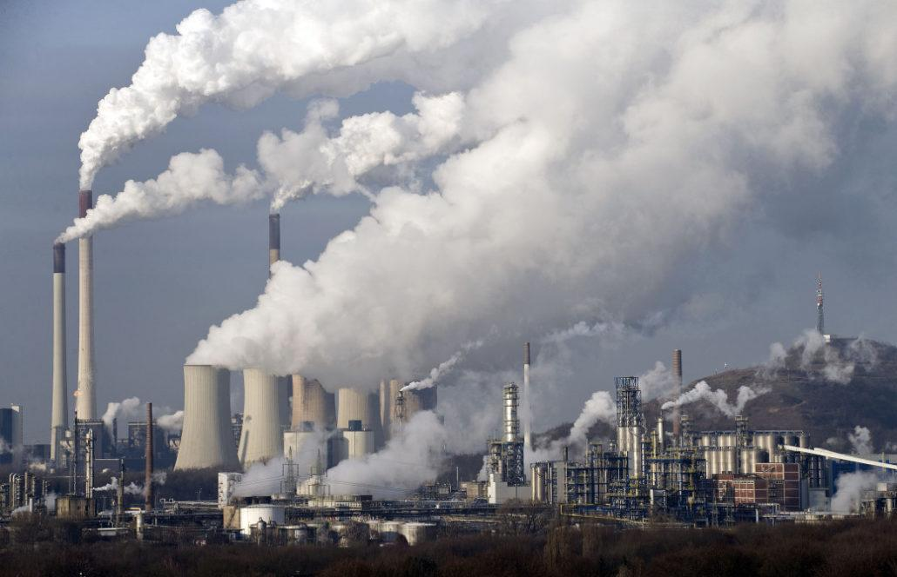
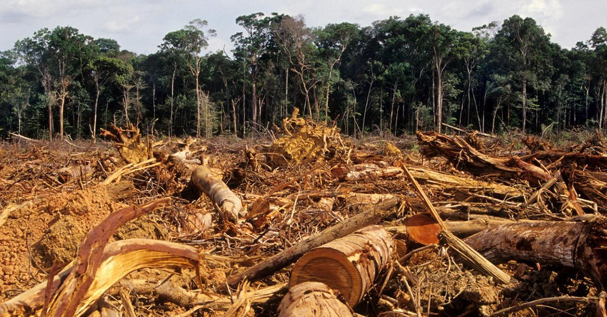
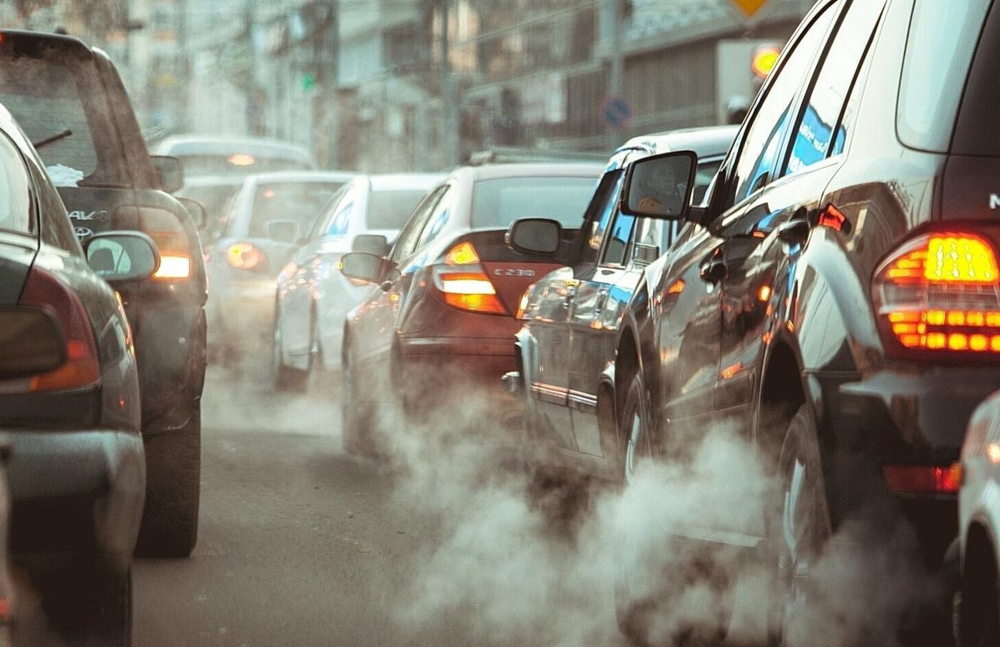

UNDERSTANDING THE PROBLEM
Causes of Climate Change
Climate change is influenced by natural processes, but human activities are the main cause of the rapid warming happening today.

Burning Fossil Fuels
Coal, oil and natural gas are used to produce electricity, power vehicles and run industries. Burning these fuels releases greenhouse gases such as carbon dioxide into the atmosphere.

Deforestation
Trees absorb carbon dioxide from the atmosphere. When forests are cut down, fewer trees are available to absorb this gas. Deforestation can therefore contribute to climate change.

Transportation
Cars, buses, trucks and airplanes often use fossil fuels. Their emissions release greenhouse gases that contribute to global warming.
Other Causes
Agriculture, waste and some industrial activities also release greenhouse gases. These activities can increase the amount of heat trapped in Earth's atmosphere.